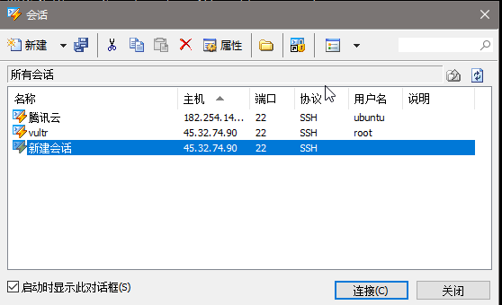
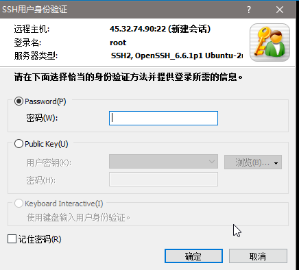

写在本文前面的话
本文的SS搭建教程仅推荐有VPS需求或者决定多人共用一个SS的人使用，因为笔者本身需要在VPS上跑在做项目的服务器做测试用，SS对于笔者来说是个附属品，如果单纯为了SS搭个梯子而去买一个VPS，您大可不必按照教程大费周章地倒腾，直接到网上买一个现成的来得快速来得实在。如果是在校内想免流量也可以考虑买chinaNet或者chinaUnicom的账号，100个小时才十几块钱，无限流量，带宽也不低（chinaNet亲测能到8-9M/s），还不会出现访问墙内资源奇慢的状况。
——本文为博主原创，转载请注明出处
在学校每个月都会因为20g的ipv4流量而烦恼，闲的时候看视频看直播一不小心就超了，所以就有了这篇博客（虽然我办了移动的宽带，然最近移动经常抽风让我很难受，有时看270p都卡）。
首先，你得有一个vps
我是用的vultr在LA的vps，每个月5刀，最近有优惠，充5刀送20刀，还是比较便宜的，以及貌似digicalocean有充5刀送100刀的学生优惠，前提是你得有信用卡，而vultr比较良心，有paypal就行。
创建服务器的时候可以自己选择地方，比如你比较想上日本的网站，就选日本的服务器，想看youtube什么的就美国的服务器吧（买国外vps理论上是需要翻墙的，你可以通过github上搜索lantern或者百度psiphon，这俩可以用，只是速度和稳定性。。。不评价）
买5美刀的服务器就行了，操作系统建议选ubuntu 14.04LTS 64bit，这篇教程里虽然选16.04 16.10没什么影响，但是如果你想进一步把下载工具的流量都免掉的话，那就选14.04吧，下篇教程会告诉你为什么建议选14.04
以及记得勾选下面图中enable IPv6这个选项，剩下的就不用管了
当然你如果你选错了不用慌，vultr的服务器随时都可以销毁再创建的，扣费都是按小时来的，不会花什么钱的。
这样你就有一个vps了（其他的服务器其实也行，如果不支持ipv6的比如搬瓦工，可以用ipv6 over ipv4这个东西来强行走ipv6，教程自行google）
于是乎，你需要开始配置你的vps了
首先你需要下载一个ssh的软件，putty或者xshell，我用的是xshell，其实这俩差不多，xshell稍微好用一些，复制粘贴比较方便。
打开之后是这样的，我因为已经配置好了，显示有2个服务器，然而你们刚开始应该是空的，所以我们点击上图的新建
把你服务器的ip填入到主机输入框中，我的是45.32.74.90，端口号不用改，22就22吧（虽然理论上说不大好）。
点确定

然后你就可以看到你刚刚新建的东西了，我没改名字，所以显示是新建会话，名字随意吧。
点击连接，等待那么个几秒
然后会弹出提示让你输入用户名，用户名可以在服务器的详细信息里看到的

我的是root，于是我输入root，点击确定

于是这时候你就可以输入密码了，密码见服务器详细信息里password，点击那个眼睛的图标就可以看到了，直接复制粘贴，点击确定就好
然后你就会发现你登录成功了
注：如果你发现你xshell里的会话标签前面的小圆点从绿色变成红色，就ctrl+shift+R或者点击文件->重新连接一下就好
然后，你就需要开始搭建你的shadowsocks
先输入apt-get install build-essential
然后apt-get install python-pip，把pip给装上
然后你就可以输入pip install shadowsocks，把我们的主角给安装起来
注：以上的过程在vultr上测试没问题，如果出现任何报错，可以上stackoverflow关键字搜索，理论上都能找到解决方案
然后你需要做shadowsocks的配置
输入vi /etc/shadowsocks.json，用vi新建一个ss的配置
vi的使用：用上下左右（或者kjhl）移动光标，按i进入insert模式从当前光标开始输入，需要移动光标的时候就按ctrl+[进入光标移动模式，删除单个字符可以用del或者光标移动模式下的x键，连按2次d删除一行，u撤销上次动作
会用vi的忽略上述的小教程
输入如下内容
{
"server":"::",
"server_port": 1234,
"local_port": 1080,
"timeout":300,
"password": "yourpassword",
"method":"aes-256-cfb",
"fast_open":true,
"workers":1
}
password里输入的是你自己定义的密码，server_port输入的端口你也可以自己定
然后ctrl+[进入光标移动模式，此时不要进入insert模式，直接输入 :wq，保存退出
如果你要像我一样用多个端口，就像下图这么写，你输入:wq的时候左下角是会有字符出现的
于是你就完成了shadowsocks的配置，
然后输入 ssserver -c /etc/shadowsocks.json -d start
你服务器的ss就跑起来啦！
接下来就是在你的PC上用ss接入啦
首先你需要弄到shadowsocks.exe这个东西，最近不知道为什么github上的shadowsocks库不见了，你们可以到我的库里拿，地址如下
https://github.com/dixonqin/shadowsocks
然后打开shadowsocks.exe，双击系统托盘图标中的小纸飞机，打开编辑服务器的窗口
像这样填上你的服务器地址，服务器端口和密码，加密就选aes-256-cfb就好了（其实就是你刚才填的method）点击确定，此时打开百度搜索ip
发现自己的ip已经变成自己服务器ip的时候，你的ipv4的ss就ok啦！
服务器网卡配置
这时候你可能会问：说好的ipv6呢？
莫慌，你如果要使用ipv6，首先你得打开你的vultr服务器的详细信息，选择settings选项
点击图中蓝色字的configuration examples，你就会看到这个

输入vi /etc/network/interfaces
然后你就可以把打开的文件里的文本换成你网页上对应上图的红色文本（每个ip的都不一样的，别按我的抄，超你网页上的，我的你用不了的），记住一定是在你服务器操作系统对应的方框里的红色文字，ubuntu 16.xx和14.xx 12.xx版本的配置是不一样的。
然后老办法:wq保存退出
输入ssserver -c /etc/shadowsocks.json -d stop
再ssserver -c /etc/shadowsocks.json -d start
你就可以通过把defult ip中的ipv6地址
像这样
填入到你的服务器地址中（其余的地方跟ipv4的一毛一样，就ip地址用ipv6的）。
注：有些版本的shadowsocks需要把在服务器地址框中填入的ipv6地址用[]括起来，我上传的版本貌似不用
点击确认。
右键系统托盘里的小纸飞机图标
让ipv6地址的这一项打上√，此时打开百度，你就成功的通过ipv6的ss连接到你的服务器啦！
注：必须你的网络环境支持ipv6才可以使用ipv6的ss，见下图，ipv6连接一项必须是Internet，才能用！
对于ipv6不计费的学校教育网来说，你就随便用流量啦，而且因为服务器在国外，自带梯子啦！笔者亲测youtube 1080p毫无压力，一个月1TB流量，尽情使用吧。
但是不限流量仅限浏览器里，比如你用浏览器看个视频下个东西什么的，如果你要使用下载工具下东西，尤其是像迅雷那种不支持ipv6的下载器，还是会走ipv4流量的，也就是ss仅仅是让浏览器接到外边去了，应用的流量还是不走ss的，想要实现应用流量也走ipv6到你自己的服务器，可以期待下一篇，ipv6的vpn搭建教程，或者采用奇怪的proxifier（不推荐，反正笔者没成功实现用迅雷下东西）。
因为你的服务器在国外，所以访问国内网站会比较卡，当流量消耗不大或者急需访问速度的时候，右键把启用系统代理的√取消掉，或者打开pac模式（访问国内网站的时候会自动不走ss）
此时你的小飞机会变成白色。（或者用chrome的switchyOmiga插件，方法自行百度）
好啦今天就到这里啦！下次会给各位带来ipv6的vpn搭建，敬请期待。
三花
2016.11.24
返回博客主页